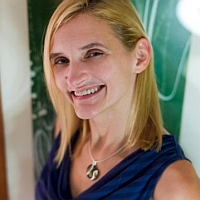

Carrie Gates is the Chief Scientist at Dell Research. She received her PhD in May, 2006, and spent the last three years of her degree working at CERT, Carnegie Mellon University, where she performed research in network security. She have also worked on access control for WebSphere while at the IBM Toronto Centre for Advanced Studies (CAS). Previous to her PhD studies, she have six years of experience in systems administration and management. She is one of sponsors of this project.